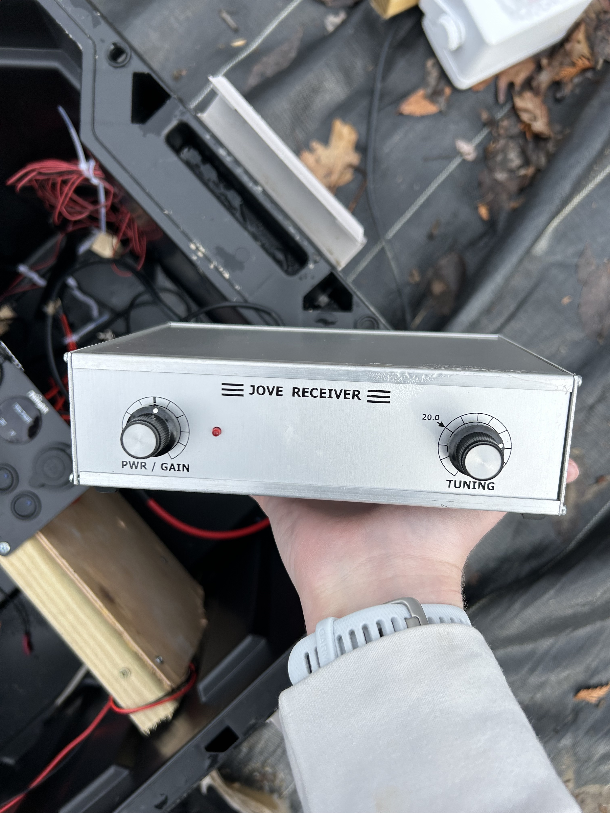

About Radio Jove
Radio Jove is a citizen science project run by NASA (linked down below), in which amateur astronomers can hone and develop their skills and interests by creating their own single or dual dipole antenna to measure Io and non-Io jovian storms as well as solar bursts, whilst learning how to operate different softwares such as RadioSky Spectrograph (RSS), Radio Skypipe, Radio Jupiter Pro (RJP). People can then interpret these spectrogram graphs, and learn more about radio astronomy, the electromagnetic spectrum, and different types of astronomy through studying different things in the field of radio astronomy within our solar system, contributing to the RadioJove Archive, or participating in worldwide studies and projects: such as measuring solar eclipses.
_______________________________________________
Radio telescopes usually consist of an antenna, be it a dipole (as is the case with Radio Jove) or a dish, a receiver, and a recorder. In the case of this radio telescope project, the antenna is a dual dipole copper antenna, which when in contact with radio waves, generates a current that runs through the copper wire and the coaxial cable. The receiver takes these signals and filters them to get the preferred frequency (20.1 mHz in the case of Radio Jove) and amplifies it, in which it is sent to the recorder, a computer, and computed into a graph that displays the incoming frequencies and intensities. Based on frequency and timing, one can discern whether a signal is coming from the sun or jupiter, and why.
The photo below showcases my dual dipole set up. The copper dipole wire, outlined in white, to make it easier to see, is raised 10 feet in the air and runs about 26 feet long via 2 13 feet pieces connected by. Each dipole is supported by a metal post and a rope connected to two stakes (8 in total). The setup is durable and can withstand soft ground, and weather including high winds and other extreme weather.

_______________________________________________
This first receiver, pictured below, is the RJ 1.1 receiver. Originally built at Laurel School, this receiver is hand soldered and constructed. Radio Jove no longer supplies this receiver model, instead you can purchase an SDRPlay RSP1A receiver, which works with Radio Jove single or dual dipole antennas, and can link to the RSS software. I now use the RSP1A coupled with RSS to get recordings.
